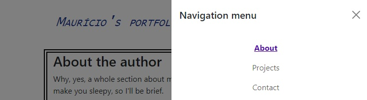
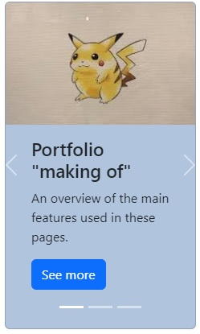

Here I'll be commenting on some of the features I've learned to use and added to these pages.
As I've mentioned before, I used Bootstrap framework to make these pages responsive. So much information was found in the Bootstrap's Documentation. If you're interested, make sure to check it out:
My favorite feature is the "navbar". It includes your logo ("brand"), a responsive trigger button and a navigation menu. Also, this isn't just a regular navbar: I've included something called "offcanvas". The navigation menu, when called by the trigger button, will be displayed in a "upper layer", and I think that's really neat.
Image 1: navbar with navigation menu expanded in larger viewports.Image 2: navbar with navigation menu under trigger button in smaller viewports.

Image 3: see the offcanvas over the page, revealing the navigation menu.
To implement this you'll need many lines of code, and that may be a little scary, but if you divide it in smaller blocks, it becomes easier to understand. The navbar with offcanvas code will be basically:
The navbar itself;
brand;
button;
offcanvas;
offcanvas header w/ closing button;
offcanvas body w/ the links.
Portal: carousel & cards
Another really cool feature is the "carousel". It goes cycling through certain items, such as images; in these pages, I've used "cards".

Image 4: notice the carousel elements (buttons to navigate through content, on the sides and bottom) and the card contents (image, text and link in button).
This is another combination, provided by the Bootstrap framework, that may require a bunch of lines of code, but isn't really that hard. It is basically: